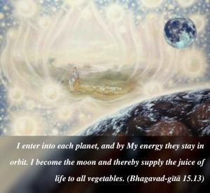
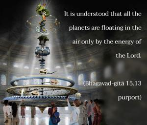
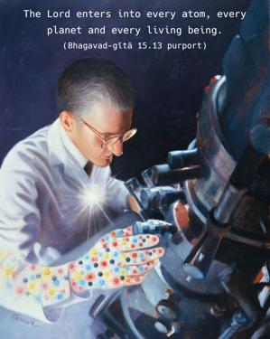

I enter into each planet, and by My energy they stay in orbit. I become the moon and thereby supply the juice of life to all vegetables.



It is understood that all the planets are floating in the air only by the energy of the Lord. The Lord enters into every atom, every planet and every living being. That is discussed in the Brahma-saṁhitā. It is said there that one plenary portion of the Supreme Personality of Godhead, Paramātmā, enters into the planets, the universe, the living entity, and even into the atom. So due to His entrance, everything is appropriately manifested. When the spirit soul is there, a living man can float on the water, but when the living spark is out of the body and the body is dead, the body sinks. Of course when it is decomposed it floats just like straw and other things, but as soon as the man is dead, he at once sinks in the water. Similarly, all these planets are floating in space, and this is due to the entrance of the supreme energy of the Supreme Personality of Godhead. His energy is sustaining each planet, just like a handful of dust. If someone holds a handful of dust, there is no possibility of the dust’s falling, but if one throws it in the air it will fall down. Similarly, these planets, which are floating in the air, are actually held in the fist of the universal form of the Supreme Lord. By His strength and energy, all moving and nonmoving things stay in their place. It is said in the Vedic hymns that because of the Supreme Personality of Godhead the sun is shining and the planets are steadily moving. Were it not for Him, all the planets would scatter, like dust in air, and perish. Similarly, it is due to the Supreme Personality of Godhead that the moon nourishes all vegetables. Due to the moon’s influence, the vegetables become delicious. Without the moonshine, the vegetables can neither grow nor taste succulent. Human society is working, living comfortably and enjoying food due to the supply from the Supreme Lord. Otherwise, mankind could not survive. The word rasātmakaḥ is very significant. Everything becomes palatable by the agency of the Supreme Lord through the influence of the moon.